% %
%
\[ \DeclarePairedDelimiters{\set}{\{}{\}} \DeclareMathOperator*{\argmax}{argmax} \]
양자역학 입문 를 참고하라.
III.3 확률 진폭
III.3-1 확률진폭을 결합하는 법칙
슈뢰딩거가 양자역학의 올바른 법칙을 처음 발견했을 때, 그는 다양한 위치에서 입자를 찾는 진폭을 기술하는 방정식을 작성했다. 이 방정식은 이미 고전 물리학자들이 알고 있던 방정식들-음파에서 공기의 운동, 빛의 전달 등을 설명하는 데 사용한 방정식들-과 매우 유사했으므로 양자역학 초기의 대부분의 시간은 이 방정식을 푸는 데 사용되었다. 동시에, 특히 보른과 디랙에 의해 양자역학 배후의 기본적으로 새로운 물리적 개념에 대한 이해가 발전하고 있었다. 양자역학이 더욱 발전함에 따라, 전자의 스핀, 다양한 상대론적 현상과 같이 슈뢰딩거 방정식에 직접적으로 포함되지 않은 많은 것들이 존재한다는 것이 밝혀졌다. 전통적으로 양자역학의 모든 과정은 동일한 방식으로 시작되어, 해당 분야의 역사적 발전 과정에서 따라온 경로를 되밟아 간다. 먼저 고전역학에 대해 많은 것을 배우게 되어 슈뢰딩거 방정식을 푸는 법을 이해할 수 있게 된다. 그는 다양한 풀이법을 배우는 데 오랜 시간을 보낸다. 이 방정식을 상세히 연구한 뒤에야 그는 전자의 스핀이라는 “고급” 주제에 도달한다.
원래 이 강의는 밀폐된 영역의 음파나 원통형 공동에서의 전자기 복사 모드와 같은 복잡한 상황에서 고전 물리학 방정식을 푸는 방법을 보여주며 마무리하려고 했다. 하지만 우리는 그 계획을 포기하고 대신 양자역학에 대해 소개하기로 결정했다. 일반적으로 양자역학의 고급 부분이라고 불리는 것이 실제로는 매우 단순하다. 관련된 수학은 특히 쉬워서 단순한 대수 연산을 포함하지만 미분 방정식은 없거나 최대한 매우 단순한 방정식만 포함한다. 유일한 문제는 우리가 더 이상 공간에서의 입자의 행동을 상세히 기술할 수 없다는 격차를 뛰어넘어야 한다는 것이다. 그래서 여기서 시도하려는 것은 일반적으로 양자역학의 “고급” 부분이라고 불리는 것에 대해 알려주는 것이다. 하지만 그것들은 가장 단순한 부분 뿐만 아니라 가장 기본적인 부분도 확률에 의해 기술된다. 솔직히 말하자면, 이것은 교육학적 실험이며, 우리가 알기로는 이전에 한 번도 수행된 적이 없었다.
이 주제에서는 사물의 양자역학적 행동이 상당히 기묘하다는 어려움이 있다. 일어날 일에 대힌 대략적이고 직관적인 아이디어를 얻기 위해 의존할 일상적인 경험을 가진 사람이 없다. 따라서 주제를 제시하는 방법은 두 가지가 있다: (\(1\)) 일어날 수 있는 일을 다소 투박한 물리적 방식으로 설명하면서, 정확한 법칙을 제시하지 않은 채 어떤 일이 발생할 지 어느 정도 범위에서 말하거나, (\(2\)) 다른 한편으로는 추상적인 형태로 정확한 법칙을 제시하는 것이다. 하지만, 그렇다면 추상화 때문에 물리적으로 그것들이 무엇인지 알 수 없을 것이다. 후자의 방법은 완전히 추상적이기 때문에 만족스럽지 않으며, 첫 번째 방법은 무엇이 진실이고 무엇이 거짓인지 정확히 알지 못하기 때문에 불편한 느낌을 남긴다. 우리는 이 어려움을 어떻게 극복해야 할지 확신하지 못한다. 실제로 I.37 Quantum benavior 과 I.38 입자 관점과 파동 관점의 관계 에서 이 문제가 나타난 것을 알게 될 것이다. 첫 번째 장은 비교적 정확했지만, 두 번째 장은 다양한 현상의 특성에 대한 대략적인 설명이었다. 여기에서는 두 극단 사이의 중간을 찾으려고 노력할 것이다.
이번 장에서는 일반적인 양자역학 개념을 다루며 시작한다. 일부 진술은 꽤 정확할 것이며, 다른 진술은 부분적으로만 정확하다. 진행하면서 어느 것이 어떤것인지 말하기 어려울 수 있지만, 책의 나머지를 다 읽게 될 때 쯤에는 어떤 부분이 유지되는지, 어떤 부분이 대략적으로 설명된 부분인지를 되돌아보며 이해하게 될 것이다. 다음 장들은 그렇게 불명확하지 않을 것이다. 사실, 우리가 다음 장들에서 신중하게 정확하게 하려고 노력한 이유 중 하나는 양자역학의 가장 아름다운 점 중 하나인, 매우 작은 것에서 얼마나 많은 것을 추론할 수 있는지를 보여주기 위해서이다.
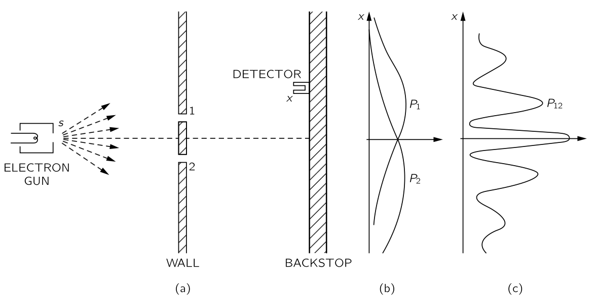
우리는 확률 진폭의 중첩에 대해 다시 논의한다. 전자와 같은 입자 발생기 \(s\), 두 개의 슬릿이 있는 벽, 그리고 그 벽 뒤에는 \(x\) 에 위치한 검출기가 있다. 우리는 입자가 \(x\) 에서 발견될 확률을 구하고자 한다. 양자역학에서 첫 번째 일반 원리는 입자가 \(s\) 에서 방출될 때 \(x\) 에 도달할 확률을 확률 진폭이라고 하는 복소수의 절대제곱으로 정량적으로 나타낼 수 있다 는 점이며, 이 경우 \(s\) 로부터 입자가 \(x\) 에 도달할 진폭이라고 한다. 우리는 이러한 진폭을 매우 자주 사용하여 디랙이 고안하고 양자역학에서 일반적으로 사용되는 약식 표기법을 사용하여 이 아이디어를 표현할 것이다. 우리는 확률 진폭을 다음과 같이 표기한다.
\[ \langle \text{입자는 } x \text{ 에 도착한다}|\text{입자는 } s \text{를 떠나}\rangle. \tag{11.1}\]
여기서 괄호 기호 \(\langle\), \(\rangle\) 은 괄호 내의 내용에 대한 확률 진폭을 의미하는 기호이며 수직선 \(|\) 오른쪽에 있는 표현은 항상 시작 조건을, 왼쪽에 있는 표현은 최종 조건을 나타낸다. 때때로 초기조건 및 최종 조건을 한 글자 약어로 표기하는 것이 편리할 수도 있다. 예를 들어, 진폭 (식 11.1) 을 다음과 같이 쓸 수 있다.
\[ \langle x | s \rangle. \tag{11.2}\]
중요한 것은 이 진폭이 복소수라는 것이다.
우리는 이미 입자가 검출기에 도달하는 방법이 두 가지일 때, 그 최종적인 확률은 두 확률의 합이 아니라 두 진폭의 합의 절대제곱으로 표기해야 함을 안다. 두 경로가 가능할 때 전자가 검출기에 도달할 확률은
\[ P_{12}=|\phi_1 + \phi_2|^2. \tag{11.3}\]
우리는 이제 이 결과를 새로운 표기법으로 표현하려 한다. 우선, 양자역학의 두 번째 일반 원리는 다음과 같다: 입자가 두 가지 가능한 경로를 통해 주어진 상태에 도달할 수 있을 때, 그 과정의 전체 진폭은 별도로 고려된 두 경로에 대한 진폭의 합이다. 우리의 새로운 표기법으 표현하면 다음과 같다.
\[ \langle x|s\rangle_\text{두 슬릿 모두 열려 있음} = \langle x|s \rangle_\text{1 번 슬릿 통과} + \langle x|s\rangle_\text{2 번 슬릿 통과}. \tag{11.4}\]
추가하자면 우리는 1번과 2번 슬릿이 충분히 작아서 전자가 슬릿을 통과한다고 말할 때, 각 슬릿의 어느 부분인지 논의할 필요가 없다고 가정한다. 물론 우리는 슬릿을 부분으로 나눠 전자가 각 부분을 통과하는 진폭을 고려할 수도 있다. 우리는 그 슬릿이 충분히 작아 이 세부 사항에 대해 걱정할 필요가 없다고 가정한다. 그것은 관련된 투박함의 일부이며, 명확한 설명은 다음으로 일단 미루도록 하자.
이제 전자가 슬릿 \(1\) 을 통해 \(x\) 의 검출기에 도달하는 과정의 진폭에 대해 더 자세히 알아본다. 여기에 세번째 일반 원리가 필요하다: 입자가 특정 경로를 지나갈 때, 그 경로의 진폭은 경로를 부분으로 나눴을 때 각 부분에 대한 진폭의 곱이다. 그림 11.1 의 설정에서 슬릿 \(1\) 을 통해 \(s\) 에서 \(x\) 까지 가는 진폭은 \(s\) 에서 \(1\) 로 가는 진폭에 \(1\) 에서 \(x\) 로 가는 진폭을 곱한 값과 같다.
\[ \langle x|s \rangle _\text{via 1} = \langle x | 1 \rangle \langle 1 | s\rangle.. \tag{11.5}\]
다시 말하지만, 이 결과는 완전히 정확하지 않다. 더 정확하려면 전자가 슬릿 \(1\) 을 통과하는 진폭에 대한 계수를 포함해야 한다. 그러나 현재의 경우는 단순한 슬릿으로, 우리는 이 계수를 \(1\) 로 간주한다.
식 11.5 는 역순으로 작성된 것으로 보인다. 즉 오른쪽에서 왼쪽으로 읽어야 한다. 전자는 \(s\) 에서 \(1\) 로 이동하고, 그 다음 \(1\) 에서 \(x\) 로 이동한다. 요약하면, 사건이 연속적으로 발생한다면—즉, 입자의 경로 중 하나를 이것을 하고, 그 다음에 이것을 하고, 또 그 다음에 저것을 한다고 말할 수 있다면—그 경로의 결과 진폭은 연속적인 각 사건에 대한 진폭을 연속적으로 곱하여 계산된다. 이 법칙을 사용하면 식 11.4 를 다시 쓸 수 있다.
\[ \langle x|s \rangle_\text{both} = \langle x|1\rangle \langle 1|s\rangle + \langle x|2\rangle \langle 2|s\rangle. \]
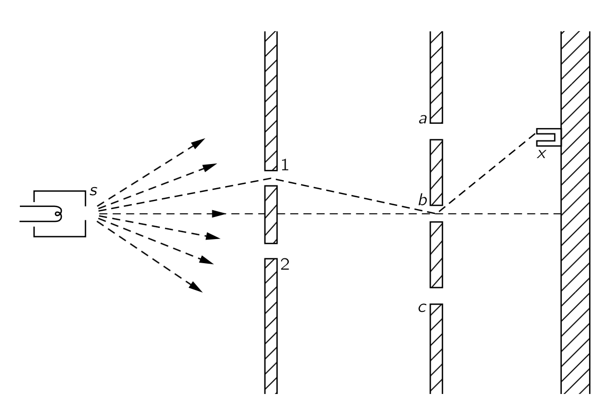
이제 이러한 원리를 사용하면 그림 11.2 에 표현된 것과 같은 훨씬 더 복잡한 문제를 계산할 수 있다. 여기에는 두 개의 벽이 있다. 하나는 \(1\) 과 \(2\) 에 두 개의 슬릿이 있고, 다른 하나는 \(a\), \(b\), \(c\) 에 세 개의 슬릿이 있다. 두 번째 벽 뒤에 \(x\) 에 검출기가 있으며, 우리는 입자가 그곳에 도달하는 진폭을 알고자 한다. 한 가지 방법은 통과하는 파동들의 중첩(또는 간섭)을 계산하는 것이지만, 가능한 경로가 여섯 개 있다고 말하고 각각에 대해 진폭을 겹쳐서 계산하여 얻을 수 있다. 우리의 두 번째 원리에 따르면, 다른 경로의 진폭은 더하므로, \(s\) 에서 \(x\) 까지의 진폭을 여섯 개의 별도 진폭의 합으로 쓸 수 있어야 한다. 여기에 세번재 원리를 사용하면 각각의 개별 진폭을 세 진폭의 곱으로 나타낼 수 있다. 그렇다면 \(s\) 에서 \(x\) 까지의 전체 진폭을 다음과 같이 쓸 수 있다.
\[ \langle x | s\rangle = \sum_{\begin{array}{c} i=1,2 \\ \alpha = a,b,c \end{array}} \langle x|\alpha \rangle \langle α | i\rangle \langle i|s \rangle. \tag{11.6}\]
이 방법을 사용하여 계산을 수행하려면, 자연스럽게 한 장소에서 다른 장소로 이동하는 진폭을 알아야 한다. 이제 일반적인 진폭에 대한 대략적인 개념을 제시하겠다. 빛의 편광이나 전자의 스핀과 같은 특정 요소들을 제외하지만, 이러한 특성을 제외하면 상당히 정확하다. 이 방법은 다양한 슬릿 조합과 관련된 문제를 해결하는데 도움을 준다. 정확한 에너지를 가진 입자가 위치 \(\boldsymbol{r}_1\) 에서 위치 \(\boldsymbol{r}_2\) 로 빈 공간을 이동하고 있다고 하자. 다시 말해, 그것은 힘이 없는 자유 입자이다. 앞에 있는 계수를 제외하고, \(\boldsymbol{r}_1\) 에서 \(\boldsymbol{r}_2\) 로 가는 진폭은
\[ \langle \boldsymbol{r}_2|\boldsymbol{r}_1\rangle = \dfrac{e^{ipr_{12}/\hbar}}{r_{12}} \tag{11.7}\]
이며 여기서 \(r_{12}= \|\boldsymbol{r}_2-\boldsymbol{r}_1\|\) 이고, \(p\) 는 상대론 방정식 \[ p^2c^2=E^2−(mc^2)^2, \]
혹은 비 상대론적 방정식
\[ \dfrac{p^2}{2m}=\text{운동 에너지} \]
를 통해 에너지 \(E\) 와 관련된 운동량이다. 식 11.7 은 실질적으로 입자가 파동과 유사한 특성을 가지고 있으며, 진폭이 파동으로 전파되어 파수(wave number)가 운동량을 \(\hbar\) 로 나눈 것과 같음을 알려준다.
일반적으로 진폭과 해당 확률에도 시간이 포함된다. 대부분의 초기 논의에서는 전자발생기가 항상 주어진 에너지로 입자를 방출한다고 가정하므로 시간에 대해 걱정할 필요가 없지만 일반적인 경우에는 다른 질문들에 관심이 있을 수도 있다. 입자가 특정 위치 \(P\) 에서 특정 시점에 방출되고, 그 입자가 나중에 위치 \(\boldsymbol{r}\) 에 도달하는 진폭을 알고자 한다면 이는 진폭 \(\langle \boldsymbol{r},t=t_1| P,\,t=0\rangle\) 으로 표현될 수 있다. 이것은 \(\boldsymbol{r}\) 과 \(t\) 모두에 따라 달라진다. 검출기를 서로 다른 장소에 배치하고 서로 다른 시간에 측정하면 다른 결과를 얻을 수 있다. 일반적으로 이 \(\boldsymbol{r}\) 과 \(t\) 함수는 파동 방정식인 미분 방정식을 만족한다. 비상대론적 경우에는 슈뢰딩거 방정식이다. 그렇다면 전자기파 또는 기체의 음파에 대한 방정식과 유사한 파동 방정식을 갖게 된다. 그러나 방정식을 만족하는 파동 함수는 공간의 실제 파동과는 동일하지 않다는 점을 강조해야 한다. 이 파동에 대해서는 음파와 같은 현실성을 생각 할 수 없다.
하나의 입자를 다룰 때 입자 파동 이라는 개념으로 생각하고 싶을 수도 있지만 이는 좋은 생각이 아니다. 예를 들어 두 개의 입자가 존재할 때 \(\boldsymbol{r}_1\) 에서 하나와 \(\boldsymbol{r}_2\) 에서 다른 입자를 찾는 진폭은 3차원 공간에서 단순한 파동이 아니라 \(\boldsymbol{r}_1\) 과 \(\boldsymbol{r}_2\) 라는 여섯 개의 공간 변수에 따라 달라진다. 두 개(또는 그 이상)의 입자를 다루는 경우, 다음과 같은 추가 원칙이 필요하다. 두 입자가 상호작용하지 않을 경우, 한 입자가 한 일을 하고 다른 입자가 다른 일을 하는 진폭은 두 입자가 각각 두 일을 수행하는 두 진폭의 곱이다. 예를 들어 입자 1 이 \(s_1\) 으로부터 \(a\) 로 갈 때의 확률진폭이 \(\langle a|s_1\rangle\) 이고 입자 2 가 \(s_2\) 로부터 \(b\) 로 갈때의 확률진폭이 \(\langle b|s_2\rangle\) 일 때, 두가지 사건이 함께 일어나는 진폭은
\[ \langle a|s_1\rangle \langle b|s_2\rangle \]
이다.
강조할 점이 하나 더 있습니다. 그림 11.2 에 있는 입자들이 첫 번째 벽의 1번과 2번 스릿에 도달하기 전에 어디에서 오는지 모른다고 가정해 보자. 두 개의 숫자-1에 도달하는 진폭과 2에 도달하는 진폭-가 주어진다면 우리는 여전히 벽 너머에서 일어날 일(예를 들어, \(x\) 에 도달하는 진폭)을 예측할 수 있다. 즉 연속적인 사건에 대한 진폭이 곱해진다는 사실 때문에, 식 11.6 에서 알 수 있듯이 분석 위해 필요한 것은 두 개의 숫자-이 경우 \(\langle 1|s \rangle\) 와 \(\langle 2|s\rangle\)-뿐이다. 이것이 바로 양자역학이 쉬워지는 이유이다. 이후 장에서는 시작 조건으로 두 개(또는 몇 개)의 수를 지정하게 되는데 바로 이런 이유 때문이다. 물론 이러한 수는 전자발생기의 위치와 장치에 대한 세부 사항에 따라 달라지지만, 두 수를 안다면 이러한 세부 사항에 대해 더 이상 알 필요가 없다.
III.3-2 이중슬릿 간섭무늬
이제는 진폭 아이디어가 어떻게 작동하는지 보자. 그림 11.1 의 실험에 그림 11.3 대로 두 슬릿 뒤에 광원을 추가한다. 5.1 에서 다음과 같은 흥미로운 결과를 발견했다. 만약 우리가 슬릿 1 뒤쪽을 살펴보고 그곳에서 산란된 광자를 발견한다면, \(x\) 에서 이 광자와 동시에 얻어진 전자들의 분포는 슬릿 2가 닫힌 것과 동일하다. 슬릿 1 또는 슬릿 2에서 관측된 전자들의 전체 분포는 별개의 분포들의 합이며, 조명이 꺼진 경우의 분포와는 완전히 달랐다. 이는 충분히 짧은 파장의 빛을 사용한다면 사실이다. 파장을 더 길게 만들어 산란이 어느 슬릿에서 발생했는지 확신할 수 없게 되면, 분포는 빛이 꺼진 것과 더 비슷해진다.
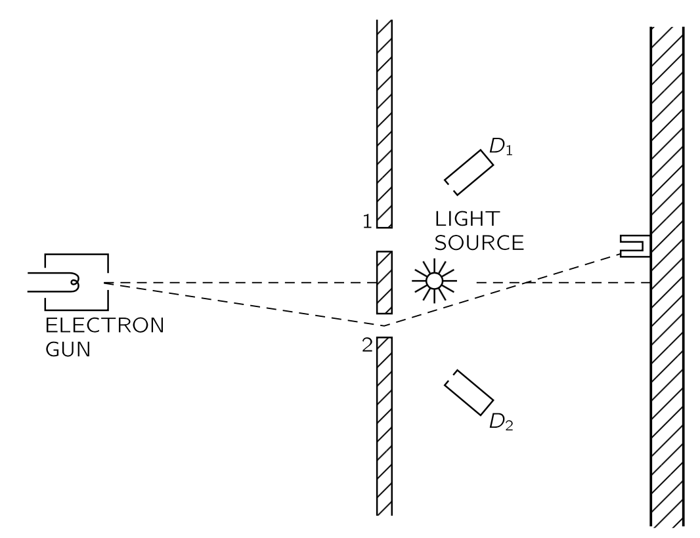
이제 새로운 표기법과 진폭 결합 원리를 사용하여 분석해보자. 전자가 슬릿 1을 통해 \(x\) 에 도달하는 진폭을 \(\phi_1\) 이라고 하자. 즉, \(\phi_1=\langle x|1\rangle \langle 1|s\rangle\) 이다. 마찬가지로 전자가 슬릿 2를 통해 \(x\) 에 도달하는 진폭을 \(\phi_2\) 라고 하자. \(\phi_2 = \langle x|2\rangle \langle 2|s\rangle\). 이 진폭은 빛이 없을 경우 두 슬릿을 통과하여 \(x\) 에 도달하는 진폭이다. 빛이 존재한다면 다음과 같은 질문을 던질 수 있다. “전자가 \(s\) 에서 시작하고 광자가 광원 \(L\) 에서 방출되어, \(x\) 에서 전자가 끝나고 슬릿 1 뒤에서 보이는 광자로 끝나는 과정의 진폭은 얼마일까? 예를 들어, 그림 11.3 에 표현된 검출기 \(D_1\) 을 이용하여 슬릿 1 뒤의 광자를 관찰하고, 유사한 검출기 \(D_2\) 를 사용하여 슬릿 2 뒤에 흩어진 광자를 계측한다고 가정하자. 광자가 \(D_1\) 에 도달하고 전자가 \(x\) 에 도달하는 진폭이 있으며, 광자가 \(D_2\) 에 도달하고 전자가 \(x\) 에 도달하는 진폭도 존재한다. 이제 계산해 보자.
비록 이 계산에 들어가는 모든 요인에 대한 올바른 수학 공식은 없지만, 다음 토론에서 그 정신을 확인할 수 있다. 첫째, 전자가 전자발생기에서 슬릿 1 까지 이동하는 진폭은 \(\langle 1|s\rangle\) 이다. 그렇다면 전자가 슬릿 1 에 있을 때 광자를 검출기 \(D_1\) 으로 산란시키는 일정한 진폭이 있다고 가정할 수 있다. 이 진폭을 \(a\) 로 표기한다. 또한 전자가 슬릿 1 에서 \(x\) 의 전자 검출기로 이동하는 진폭 \(\langle x|1\rangle\) 이 있다. 전자가 슬릿 1을 통해 \(s\) 에서 \(x\) 로 이동하고 광자를 \(D_1\) 으로 산란시키는 진폭은
\[ \langle x|1\rangle a \langle 1|s\rangle = a\phi_1 \]
이다.
또한, 슬릿 2를 통과하는 전자가 광자를 카운터 \(D_1\) 으로 산란시키는 진폭도 존재한다. \(D_1\) 은 슬릿 1만 바라보고 있는데 어떻게 슬릿 2 를 통과한 전자와 산란된 빛이 \(D_1\) 으로 갈 수 있는지 반론을 제기할 수도 있다. 그러나 파장이 충분히 길면 회절 효과가 발생하므로 가능하다. 장치가 잘 만들어지고 파장이 짧은 광자를 사용할 경우, 슬릿 2 를 통과한 전자에 의해 \(D_1\) 방향의 빛 산란이 발생할 진폭은 매우 작다. 하지만 일반성을 유지하기 위해 그러한 진폭이 존재한다는 점을 고려하고자 하며, 이를 \(b\) 라고 하자. 그렇다면 전자가 슬릿 2를 통과해 가서 광자를 \(D_1\) 으로 산란시키는 진폭은
\[ \langle x|2 \rangle b\langle 2|s\rangle = b\phi_2 \]
\(x\) 에서 전자가 측정되는 진폭과 \(D_1\) 에서 광자가 측정되는 진폭은 전자의 가능한 두 경로에 대한 항의 합이다. 각 항은 두 인수-(\(1\)) 전자가 구멍을 통과하는, (\(2\)) 광자가 그러한 전자에 의해 \(D_1\) 으로 산란되는-로 구성되어 있으므로 아래의 식을 얻는다.
\[ \left\langle \begin{array}{ll} x\text{ 에 전자} \\ D_1 \text{ 에 광자}\end{array} \right|\left. \begin{array}{ll} s \text{ 로부터의 전자} \\ L \text{ 로부터의 광자}\end{array}\right\rangle = a\phi_1 + b \phi_2. \tag{11.8}\]
이제 다른 빛 검출기 \(D_2\) 에서 광자가 발견될 때 유사한 식을 얻을 수 있다. 단순성을 위해 시스템이 대칭이라고 가정한다면, \(a\) 는 전자가 슬릿 2를 통과할 때 \(D_2\) 에 있는 광자의 진폭이며, \(b\) 는 전자가 홀 1을 통과할 때 \(D_2\) 에 있는 광자의 진폭이다. 광자가 \(D_2\) 에, 전자가 \(x\) 검출되는 것에 해당하는 총 진폭은 다음과 같다.
\[ \left\langle \begin{array}{ll} x\text{ 에 전자} \\ D_2 \text{ 에 광자}\end{array} \right|\left. \begin{array}{ll} s \text{ 로부터의 전자} \\ L \text{ 로부터의 광자}\end{array}\right\rangle = a\phi_2 + b \phi_1. \tag{11.9}\]
이제 모든 준비를 마쳤고 계산만 하면 된다. 우선 \(D_1\) 에서 광자를 \(x\) 에서 전자를 얻을 확률은 \(|a\phi_1 + b\phi_2|^2\) 이다. 이 표현을 좀 더 자세히 살펴보자. 우선 \(b=0\) 이라면(이는 장치가 이상적일 때 작동하는 방식이다) 답은 단순히 \(|a|^2|\phi_1|^2\) 으로 전체 진폭에서 \(|a|^2\) 를 곱한 만큼 감소한 것이다. \(|\phi_1|^2\) 는 슬릿이 하나뿐일 경우 얻을 확률 분포로, 그림 11.4 (a) 의 그래프에 표시된 바와 같다. 반면에 파장이 매우 길 경우, 슬릿 2 뒤에서 \(D_1\) 으로의 산란은 슬릿 1과 거의 동일할 수 있다. \(a\) 와 \(b\) 에 어떤 위상이 포함될 수 있지만, 두 위상이 동일한 간단한 경우, 즉 실질적으로 \(a=b\) 이면 전체 확률은 \(|a|^2|\phi_1+\phi_2|^2\) 가 된다. 그런데 이것은 광자를 전혀 사용하지 않았을 때 얻는 확률 분포이다. 따라서 파장이 매우 긴 경우-그래서 광자 검출이 효과가 없는 경우—, 그림 11.4 (b) 와 같이 간섭 효과를 나타내는 원래의 분포 곡선으로 돌아간다. 검출이 부분적으로 효과가 있는 경우, 큰 \(\phi_1\) 과 약간의 \(\phi_2\) 사이에 간섭이 발생하며, 그림 11.4 (c) 에 보이는 중간적인 분포를 얻을 수 있다. 말할 필요도 없이, \(D_2\) 에서 광자와 \(x\) 에서 전자 측정이 일치하는 수를 찾으면 동일한 종류의 결과를 얻을 수 있다. I.37 Quantum behavior 의 논의를 기억한다면, 이 결과들이 그곳에서 설명된 내용을 정량적으로 설명하고 있음을 확인할 수 있다.
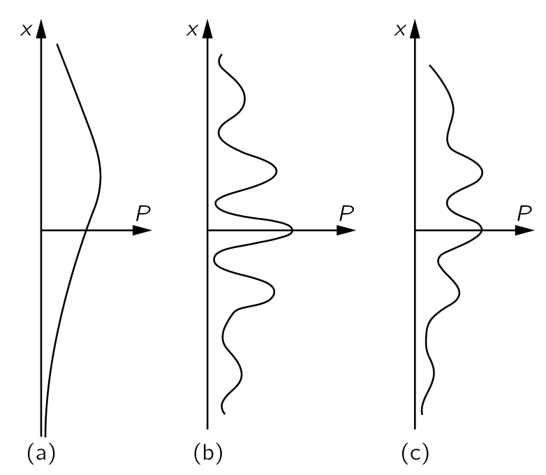
이제 일반적인 실수를 피하는데 도움을 주는 중요한 점을 알아보자. 광자가 \(D_1\) 에서 측정되었는지 \(D_2\) 에서 측정되었는지와는 관계없이 전자가 \(x\) 에 도달하는 진폭만을 원한다고 하자. 그렇다면 식 11.8 과 식 11.9 에 주어진 진폭을 더해야 하나? 절대로 아니다. 서로 다른 그리고 구별된 최종 상태에 대해 진폭을 더해서는 안된다. 광자가 광자 계수기 중 하나에 받아들여지면, 시스템을 추가적으로 교란하지 않고 언제든지 어떤 대안이 발생했는지 판단할 수 있다. 각각의 대안는 서로 완전히 독립된 확률을 가지고 있다. 여기서 최종 이란 바로 그 순간에 확률을 원한다는 의미이다. 즉, 실험이 “완료”될 때를 의미한다. 전체 과정이 완료되기 전에 실험 내부의 다양한 구별할 수 없는 다른 대안들에 대한 진폭을 추가한다. 과정이 끝날 때 “광자를 보고 싶지 않다” 라고 말할 수 있다. 그것은 너의 사정이며, 여전히 진폭을 추가하지 안는다. 자연은 당신이 무엇을 보고 있는지 알지 못하고, 데이터를 삭제하든 하지 않든 자연이 해야 할 일을 할 뿐이다. 따라서 여기서는 진폭을 추가해서는 안된다. 우리는 먼저 가능한 모든 다양한 최종 사건에 대한 진폭을 제곱한 다음 합산합니다. \(x\) 에 전자를, \(D_1\) 또는 \(D_2\) 에서 광자를 측정할 올바른 결과는
\[ \begin{aligned} &\left|\left\langle \begin{array}{ll} x \text{ 에 전자}\\ D_1 \text{ 에 광자} \end{array}\right| \left. \begin{array}{ll} s\text{ 로부터 전자} \\ L \text{ 로부터 광자}\end{array}\right\rangle \right|^2 + \left|\left\langle \begin{array}{ll} x \text{ 에 전자}\\ D_2 \text{ 에 광자} \end{array}\right| \left. \begin{array}{ll} s\text{ 로부터 전자} \\ L \text{ 로부터 광자}\end{array}\right\rangle \right|^2 \\[0.5em] &\qquad \qquad\qquad = |a\phi_1+b\phi_2|^2+|a \phi_2+b \phi_1|^2. \end{aligned} \tag{11.10}\]
III.3-3 결정으로부터의 산란
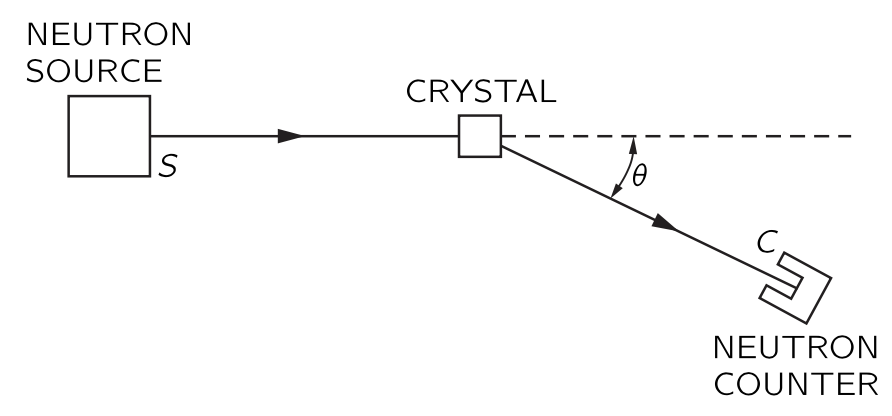
다음 예는 확률 진폭의 간섭을 다소 신중하게 분석해야 하는 현상이다. 결정으로부터 중성자의 산란 과정을 살펴보자. 중심에 핵을 가진 원자들이 주기적으로 배열된 결정이 있고 멀리서 오는 중성자 빔이 오고 있다고 하자. 결정의 다양한 핵들을 인덱스 \(i\) 로 표기할 수 있으며, 전체 원자의 개수를 \(N\) 이라고 하자. 그림 11.5 에 표현된 배치을 사용하여 중성자가 카운터에 들어갈 확률을 계산하려고 한다. 특정 원자 \(i\) 에 대해, 중성자가 계측기 \(C\) 에 도달하는 진폭은 중성자가 중성자원 \(S\) 에서 핵 \(i\) 까지 도달하는 진폭에, 그곳에서 산란되는 진폭 \(a\) 를 곱한 뒤, \(i\) 에서 계측기 \(C\) 에서 측정되는 진폭을 곱한 것이다. 즉
\[ \langle C \text {에 있는 중성자} | S \text{ 로부터의 중성자}\rangle_{\text{via } i} = \langle C|i\rangle a \langle i|S\rangle . \tag{11.11}\]
이 식을 작성할 때 우리는 모든 원자에 대해 산란 진폭 \(a\) 가 동일하다고 가정했다. 여기에는 구별하기 어려운 많은 경로가 있다. 저에너지 중성자가 원자와 산란 할 때 원자를 결정의 자리에서 이동시키지 않고 핵과 산란하기 때문에 경로들을 구별할 수 없다. 즉 산란에 대한 기록이 남지 않는다. 앞선 논의에 따르면, \(C\) 에서의 중성자의 전체 진폭은 모든 원자에 대한 식 11.11 의 합을 포함한다.
\[ \langle C \text { 에 있는 중성자} | S \text{ 로부터의 중성자}\rangle = \sum_{i=1}^N \langle C|i\rangle a \langle i|S\rangle . \tag{11.12}\]
여기서 서로 다른 공간상의 위치에 있는 원자들의 산란 진폭을 더하므로 진폭은 서로 다른 위상을 갖게 되며, 이는 격자에서 발생하는 빛의 산란에 대해 이미 분석한것과 같은 특징적인 간섭 패턴을 보인다.
이러한 실험에서 각도에 따른 중성자 강도는 그림 11.6 (a) 에 표시된 바와 같이 매우 날카로운 간섭 피크들과 그 사이의 매우 낮은 강도와 같은 큰 변동을 보인다. 하지만 특정 종류의 결정에 대해서는 이렇게 작동하지 않으며, 위에서 논의한 간섭 피크와 함께 모든 방향으로 발생하는 산란에 의한 백그라운드가 존재한다. 이것은 겉보기엔 신기하지만 그 이유를 이해하려고 노력해야 한다. 지금까지는 중성자의 중요한 특성 하나를 고려하지 않았다. 중성자는 \(1/2\) 스핀을 가지며 따라서 “up” 과 “down” 스핀이 존재 한다. 결정의 핵에 스핀이 없으면 중성자의 스핀은 전혀 영향을 미치지 않는다. 하지만 결정 핵이 스핀을 가진다면, 예를 들어 \(1/2\), 위에서 설명한 흐릿한 산란의 백그라운드를 관찰하게 된다.
중성자가 하나의 스핀 방향을 가지고 원자핵도 동일한 스핀을 가지고 있다면, 산란 과정에서 스핀의 변화는 일어나지 않는다. 중성자와 원자핵이 서로 반대 스핀을 갖는 경우, 스핀이 변하지 않는 과정과 스핀 방향이 교환되는 두 과정에 의해 산란이 발생할 수 있다. 스핀들의 합에 순변화가 없다는 이 규칙은 우리 고전적 각운동량 보존 법칙과 유사하다. 우리는 모든 산란 핵이 한 방향으로 스핀을 가지고 있다고 가정한다면 현상을 이해하기 시작할 수 있다. 같은 스핀을 가진 중성자는 예상되는 급격한 간섭 분포를 가지고 산란합니다. 반대 스핀이 있는 것은 어떨까? 스핀 플립 없이 산란한다면 앞의 결과와 같고, 산란에서 두 스핀이 뒤집힌다면 원칙적으로 어느 핵이 산란을 수행했는지 알 수 있다. 왜냐하면 그 핵만이 스핀을 뒤집힌 유일한 핵이기 때문이다. 산란을 한 원자를 알 수 있다해도 다른 원자들은 그것과 무슨 관련이 있습니까? 물론, 아무 상관이 없다. 산란은 단일 원자에서 발생하는 산란과 정확히 동일하다.
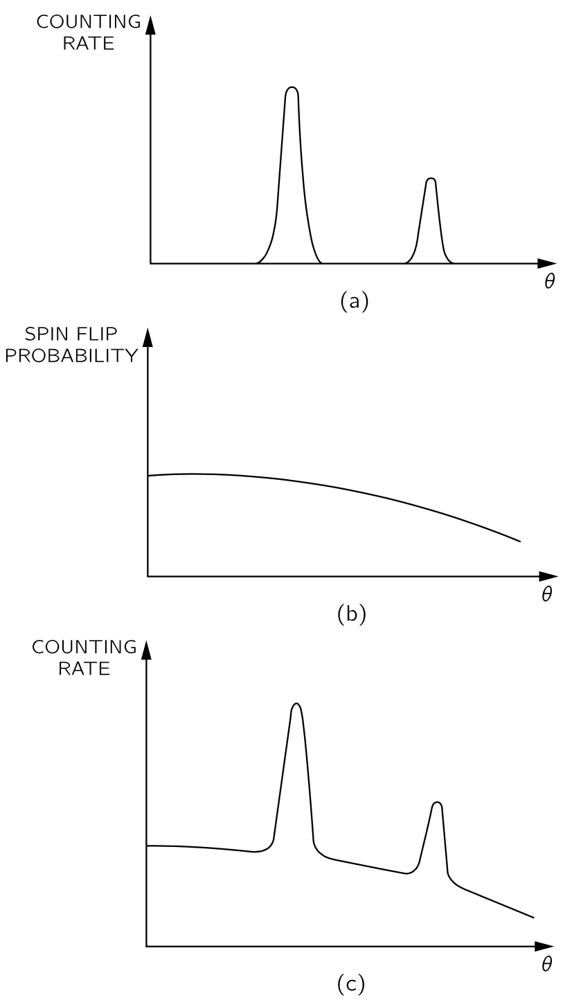
이 효과를 포함하기 위해 식 11.12 는 수정되어야 한다. 먼저, 원천의 모든 중성자가 업스핀을 갖고, 결정의 모든 핵이 다운스핀을 갖는 것으로 시작하자. 우선 측정기에서의 모든 중성자의 스핀이 업이고(\(C_\uparrow\)) 결정의 모든 스핀이 다운(\(X_\downarrow\))인 진폭은 이전 논의와 같다. 스핀 플립 없이 산란할 진폭을 \(a\) 라고 하자. 물론, \(i\) 번째 원자로부터의 산란 진폭은 아래와 같다.
\[ \langle C_\uparrow,\,X_\downarrow | S_\uparrow,\, X_\downarrow \rangle = \langle C|i\rangle a \langle i|S\rangle. \]
모든 원자 스핀이 아직 다운인 상태이므로, 다양한 대안(\(i\) 의 다른 값)을 구분할 수 없다. 어떤 원자가 산란을 했는지 명확히 알 방법이 없습니다. 이 과정에서는 모든 진폭이 간섭한다.
하지만 탐지된 중성자의 스핀이 \(S\) 에서 시작했음에도 불구하고 스핀이 다운되는 될 수 있으며 이 때 결정에서는 스핀 중 하나가 업으로 바뀌어야 한다. 이를 \(k\) 번째 원자라고 하고 이 상태를 \(X_{k\uparrow}\) 라고 표기한다. 우리는 모든 원자에 대해 스핀 플립이 일어나는 산란 진폭은 모두 동일한 \(b\) 라고 가정하자. (실제 결정에서는 플립된 스핀이 다른 원자로 이동할 가능성이 매우 높지만, 이 확률이 매우 낮은 결정이라고 생각하자) 산란 진폭은 다음과 같다.
\[ \langle C_\downarrow,\,X_{k\uparrow} | S_\uparrow,\, X_\downarrow \rangle = \langle C|k\rangle b \langle k|S\rangle. \tag{11.13}\]
다운 스핀 중성자와 \(k\) 번째 핵의 업스핀을 찾는 확률은 이 진폭의 절대값 제곱과 같으며, 이는 간단히 \(|b|^2 |\langle C|k\rangle \langle k|S\rangle|^2\) 이다. 여기서 \(|\langle C|k\rangle \langle k|S\rangle|^2\) 는 결정 내 위치와 거의 독립적이며, 절대제곱값이므로 위상이 사라졌다. 결정 내 모든 핵에서 스핀이 플립되어 산란할 확률은 이제
\[ |b|^2 \sum_{k=1}^N |\langle C|k\rangle \langle k |S\rangle|^2 \]
이며 이는 그림 11.6 (b) 와 같이 매끄러운 분포를 보여준다.
당신에게는 “어느 원자의 스핀이 업이든 상관하지 않는다”고 주장할 수도 있다. 당신은 모르지만, 자연은 알고 있다. 그리고 확률은 실제로 위에서 제시한 바와 같다. 즉 간섭이 없다. 반면에, 검출기에서 업스핀 전자를 관측하고, 결정의 모든 원자는 여전히 다운 스핀일 확률은
\[ \left| \sum_{i=1}^N \langle C|i\rangle a \langle i|S\rangle \right|^2 \]
이다. 절대값의 제곱 안에 위상을 가지고 더해지므로 우리는 날카로운 간섭 패턴을 보게 된다. 우리가 검출된 중성자의 스핀을 관찰하지 않는 실험을 수행한다면, 두 종류의 사건이 모두 발생할 수 있으며, 각각의 확률이 더해진다. 전체 확률(또는 계수율)은 각도의 함수로서 그림 11.6 (c) 의 그래프와 같다.
이 실험의 물리를 검토해 보자. 원칙적으로 가능한 최종 상태들을 구분할 수 있다면(비록 그렇게 할 필요는 없지만), 전체 최종 확률은 각 상태에 대한 확률(진폭이 아니라)을 계산한 뒤 이를 합산함으로써 얻어진다. 원칙적으로도 최종 상태를 구분할 수 없으면, 실제 확률을 찾기 위해 절대제곱을 취하기 전에 확률 진폭을 합산해야 한다. 특히 주의해야 할 점은, 중성자를 파동만으로 표현하려고 하면 다운스핀 중성자의 산란에 대해 업스핀 중성자와 동일한 분포를 얻을 수 있다는 것이다. 당신은 이 “파동”이 모든 서로 다른 원자에서 나오며, 같은 파장을 가진 업스핀 원자와 마찬가지로 간섭한다는 점을 말해야 한다. 하지만 우리는 그것이 작동하는 방식이 아니라는 것을 알고 있다. 앞서 언급했듯이, 우리는 우주의 파동에 너무 많은 현실을 부여하지 않도록 주의해야 한다. 그것들은 특정 문제에 유용하지만 모든 문제에는 유용하지 않는다.
III.3-4 동일 입자
다시 한번 확인한다:구분할 수 없는 두 가지 방식으로 일어날 수 있는 물리적 상황이라면 진폭의 간섭이 존재한다. 다음에 설명할 실험은 이와 관련된 양자역학의 아름다운 결과 중 하나를 보여줄 것이다. 우리는 비교적 낮은 에너지에서의 핵에 대한 핵들의 산란에 대해 알아보자. \(\alpha\) 입자(헬륨 핵)를 산소에 발사시킨다고 하자. 반응을 분석하기 쉽게 하기 위해, 우리는 질량 중심 기준틀에서 산소 핵과 \(\alpha\) 입자가 충돌 전에는 속도가 반대 방향으로, 충돌 후에도 정확히 반대 방향으로 속도를 갖는다고 하자. 그림 11.7 (a) 를 참조하라. (질량이 다르기 때문에 속도의 크기도 다르다.) 여기에 에너지는 보존되며 충돌 에너지가 충분히 낮아 어느 입자도 분해되거나 여기 상태로 남지 않을 것이라고 가정한다. 두 입자가 각각 방향이 바뀌는 것은, 고전적으로 전기적 반발 때문이다. 산란은 서로 다른 각도에서 서로 다른 확률로 발생할 것이며, 우리는 이러한 산란의 각도 의존성에 대해 논의하고자 한다. (물론 이 현상을 고전적으로 계산하는 것이 가능하며, 이 문제에 대한 답이 고전적으로 나오는 것과 동일하게 나오는 것은 양자역학에서 가장 눈에 띄는 우연 중 하나이다. 이것은 역제곱법칙을 제외한 다른 힘에 대해 일어나지 않기 때문에 흥미로운 점이며, 따라서 이는 확실히 우연이다.)
다양한 방향으로의 산란 확률은 그림 11.7 (a) 와 같이 실험을 통해 측정할 수 있다. 1번 위치의 카운터는 \(\alpha\)-입자만 감지하도록 설계될 수 있으며, 2번 위치의 카운터는 산소만 감지하도록 설계될 수 있다—단지 확인용으로. (실험실 기준틀에서는 검출기가 반대가 아니지만, CM 기준틀에서는 반대이다.) 이 실험은 다양한 방향으로의 산란 확률을 측정하려 한다. 각도 \(\theta\) 일 때 계수기에 산란되는 진폭을 \(f(\theta)\) 라고 하면 그러면 \(|f(\theta)|^2\) 는 우리가 실험적으로 결정한 확률이 된다.
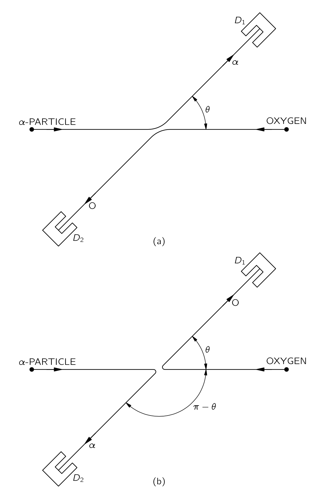
이제 우리는 계수기가 \(\alpha\)-입자 또는 산소 핵 중에 하나에 반응하도록 하는 또 다른 실험을 설정할 수 있다. 그렇다면 우리는 어떤 입자가 계수되는지 구분하지 않을 때 어떤 일이 일어나는지 파악해야 한다. 물론, \(\theta\) 위치에서 산소를 측정하기 위해서는 그림 11.7 (b) 와 같이 반대쪽 \((\pi−\theta)\) 에 \(\alpha\)-입자가 있어야 한다. 따라서 \(f(\theta)\) 가 각도 \(\theta\) 를 통과하는 \(\alpha\)‐산란 의 진폭이라면, \(f(\pi−\theta)\) 는 각도 \(\theta\) 를 통과하는 산소 산란의 진폭이다. 따라서 검출기에 위치 1에 입자가 존재할 확률은 다음과 같다.
\[ D_1 \text{ 에서 어떤 입차가 측정될 확률}=|f(\theta)|^2+|f(\pi−\theta)|^2. \tag{11.14}\]
비록 이 실험에서는 그들을 구분하지 않지만 두 상태는 원칙적으로 구분할 수 있다. 즉 진폭이 아니라 확률이 더해진다.
위에서 제시된 결과는 \(\alpha\)‐입자에 대한 표적으로 산소, 탄소, 베릴륨, 수소와 같은 다양한 핵에 대해 정확하다. 그러나 \(\alpha\)-입자의 표적으로 \(\alpha\)-입자를 놓는것에는 적용 할 수 없다. 두 입자가 정확히 동일한 경우에 대해, 실험 데이터는 식 11.14 의 예측과 일치하지 않는다. 예를 들어, \(90^\circ\) 에서의 산란 확률은 위 이론이 예측하는 것의 정확히 두 배이며, 입자들이 헬륨의 핵이라는 것과는 전혀 관련이 없다. 표적이 He3 이고 발사체가 \(\alpha\)-입자(He4) 인 경우는 식 11.14 와 일치한다. 일치하지 않는 것은 표적과 발사체가 동일한 He4 일 때 이다.
\(\alpha\)-입자를 카운터에 넣는 방법은 두가지가 있다. 발사체 \(\alpha\)-입자를 각도 \(\theta\) 로 산란시키거나, \((\pi−\theta)\) 각도로 산란시키는 것이다. 발사체 입자와 표적 입자 중에 어느 것이 계수기에서 계수됬는지 어떻게 알 수 있을까? 답은 우리가 알 수 없다는 것이다. \(\alpha\)-입자와 \(\alpha\)-입자의 경우, 구별할 수 없는 두 가지 대안이 있습니다. 여기서는 확률 진폭이 더하여 간섭하도록 해야 하며, 계수기에서 \(\alpha\)-입자를 찾을 확률은 그 합의 제곱이다.
\[ \alpha\text{- 입자가 }D_1 \text{ 에서 계수될 확률} = |f(\theta)+f(\pi−\theta)|^2. \tag{11.15}\]
이는 식 11.14 와는 상당히 다른 결과이다. \(\theta=\pi/2\) 인 경우, \(f(\theta)=f(\pi−\theta)\) 이며, 따라서 확률은 식 11.15 의 경우 \(|f(\pi/2)+f(\pi/2)|^2=4|f(\pi/2)|^2\) 이지만 간섭이 없다면, 식 11.14 에 따라 \(2|f(\pi/2)|^2\) 이다. 즉 \(\theta=\pi/2\) 에서 우리가 예상했던 것보다 두 배의 산란이 있다. 물론, 다른 각도에서는 결과도 다를 것이다. 따라서 입자가 동일할 때, 입자를 구분할 수 있을 때는 일어나지 않는 새로운 현상이 발생한다는 비정상적인 결과가 나타난다. 수학적으로는 두 입자가 단순히 역할을 교환하고 간섭이 발생하는 대안 과정의 진폭을 더하는 것이다.
전자와 전자를 산란시키거나 양성자와 양성자를 산란시키는 실험에서는 더 이상한 현상이 일어난다. 위의 결과 중 어느 것도 올바르지 않다! 이러한 입자들에 대해서는 더 새로운 규칙, 즉 매우 특이한 규칙을 호출해야 한다. 그 규칙은 다음과 같다: 한 지점에 도착하는 전자가 다른 전자와 교환되는 상황이 있을 때, 새로운 진폭이 반대 위상을 가진 기존 진폭과 간섭한다. 간섭이지만 마이너스 기호가 있다. \(\alpha\)-입자의 경우, 검출기로 들어가는 \(\alpha\)-입자를 교환할 때, 간섭하는 진폭이 양의 부호로 간섭한다. 전자의 경우, 교환에 대한 간섭 진폭은 음의 부호로 간섭한다. 아래에서 논의할 다른 세부 사항을 제외하고, 그림 11.8 에 표시된 실험에서 전자에 대한 적절한 방정식은 다음과 같다.
\[ \text{전자가 }D_1 \text{ 에서 계수될 확률} = |f(\theta)−f(\pi−\theta)|^2. \tag{11.16}\]
우리는 아직 전자의 스핀을 고려하지 않았기 때문에 위의 진술은 아직까지는 조건부로 받아들여져야 한다\(^1\).. 전자 스핀은 산란 평면에 대해 up 또는 down 으로 간주될 수 있다. 실험의 에너지가 충분히 낮으면 전류에 의한 자기력은 작아지고 스핀은 영향을 받지 않는다. 이 분석에서는 이에 해당된다고 가정하며, 충돌 중에 스핀이 변경될 가능성이 없다. 전자가 어떤 스핀을 가지고 있든 계속 유지된다. 이제 보니 많은 가능성이 있다. 발사체 입자와 표적 입자는 둘다 업스핀, 둘다 다운스핀 혹은 반대 스핀을 가질 수 있다. 두 스핀이 그림 11.8 과 같이 업인 경우(혹은 둘 다 다운인 경우) 반동 입자에 대해서도 동일하게 적용되며, 이 과정의 진폭은 그림 11.8 (a) 와 (b) 에 표시된 두 가능한 경우의 진폭 차이이다. \(D_1\) 에서 전자를 검출할 확률은 식 11.16 에 의해 주어진다.
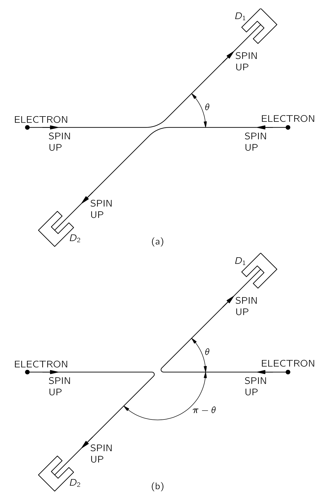
하지만 발사체 스핀은 업이고 표적 스핀은 다운이라고 가정하자. 1 번 계수기에 진입하는 전자는 스핀 업 또는 스핀 다운을 가질 수 있으며, 이 스핀을 측정함으로써 그것이 발사체 빔에서 온 것인지 표적에서 온 것인지를 알 수 있다. 두 가능성은 그림 11.9 (a) 와 (b) 에 표현되어 있다. 원칙적으로 구분할 수 있으므로 간섭이 없으며—단순히 두 확률을 더한 수이다. 동일한 논증은 두 개의 원래 스핀이 모두 뒤바뀐 경우에도 성립한다.
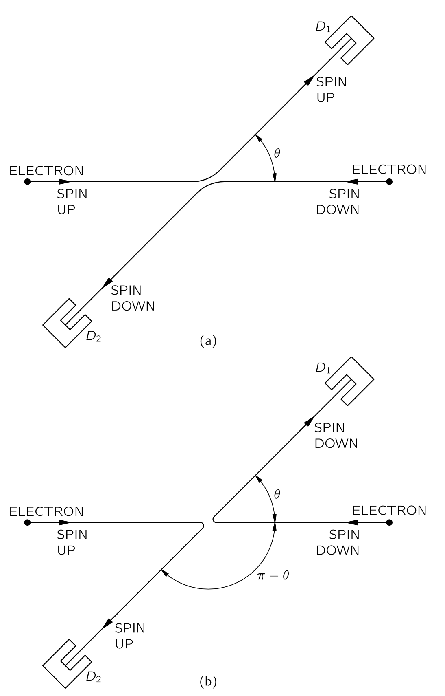
전자가 완전히 편극되지 않은 텅스텐 필라멘트에서 추출된다면, 특정 전자가 스핀 업 또는 스핀 다운을 할 확률은 50대 50이다. 실험의 어느 지점에서든 전자의 스핀을 측정하지 않으면, 우리가 ’비편광 실험’이라고 부르는 것이 된다. 이 실험의 결과는 모든 다양한 가능성을 나열하여 계산하는 것이 가장 좋다. 각 구별 가능한 대안마다 별도의 확률이 계산되며 전체 확률은 모든 개별 확률의 합이 된다. 비편광 빔의 경우 \(\theta=\pi/2\) 에 대한 결과는 독립적인 입자를 사용한 고전적인 결과의 절반이다. 동일한 입자의 행동은 많은 흥미로운 결과를 보여준다. 다음 장에서 이를 보다 자세히 논의하자.
III.4 동일 입자
III.4-1 보즈 입자와 페르미 입자
마지막 장에서는 두 동일한 입자의 과정에서 발생하는 간섭에 대한 특별한 규칙을 고려하기 시작했다. 동일한 입자란 전자와 같이 서로 구별할 수 없는 것들을 의미한다. 동일한 두 입자를 포함하는 과정에서, 한 입자가 검출기에 도달하는 것과 다른 입자가 도달하는 것은 구별할 수 없으며, 구별할 수 없는 모든 대안 사례와 마찬가지로 원래의 교환되지 않은 경우와 간섭이 발생한다. 사건의 진폭은 두 간섭 진폭의 합이며, 흥미롭게도 이 간섭은 경우에 따라 같은 위상 혹은 반대 위상에서 이루어진다.
두 입자 \(a\) 와 \(b\) 의 충돌을 생각해보자. 그림 11.10 (a) 에서와 같이 입자 \(a\) 는 방향 \(1\) 로 산란하고 입자 \(b\) 는 방향 \(2\) 로 산란하는 과정의 진폭을 \(f(\theta)\) 라고 하자. 그렇다면 이러한 사건을 관찰할 확률 \(P_1 \propto |f(\theta)|^2\) 이다. 물론, 그림 11.10 (b) 에 표시된 바와 같이 입자 \(b\) 가 \(1\) 번 계수기에서 계측되고 입자 \(a\) 가 \(2\) 번 계수기로 계측 될 수 있다. 스핀 등으로 정의된 특별한 방향이 없다고 가정하면, 이 과정의 확률 \(P_2 = |f(\pi - \theta)|^2\) 이며, 이는 1 번 계수기를 \(\pi−\theta\) 만큼의 각도로 로 이동했을 때 첫 번째 과정과 동일하기 때문이다. 두 번째 과정의 진폭이 단지 \(f(\pi−\theta)\) 라고 생각하실 수도 있지만 발생할 수 있는 임의의 위상 변화를 생각해야 한다. 즉, 진폭은 \(e^{iδ}f(\pi−\theta)\) 가 된다. 이 진폭은 역시 \(P_2= |f(\pi−\theta)|^2\) 의 확률을 제시한다.
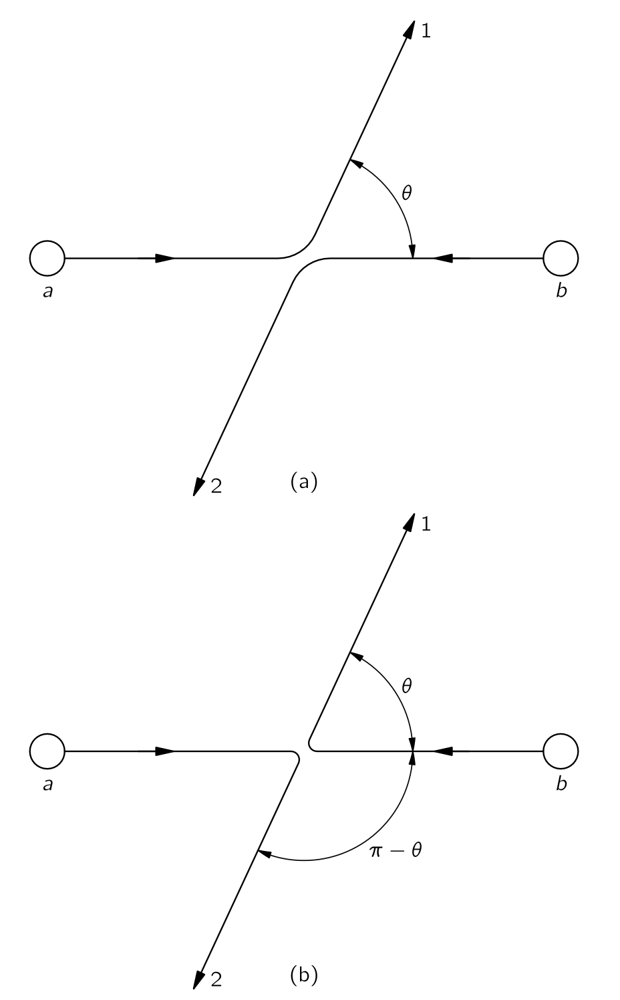
이제 \(a\) 와 \(b\) 가 동일한 입자라면 어떤 일이 일어나는지 살펴보자. 그렇다면 그림 11.10 의 두 그림에 표현된 두 개의 서로 다른 과정은 구분할 수 없다. \(a\) 또는 \(b\) 중 하나가 1번 계수기로 측정되고, 다른 하나는 2번 계수기에 계측되는 진폭이 있다. 이 진폭은 그림 11.10 에 표시된 두 과정에 대한 진폭의 합이다. 첫 번째를 \(f(\theta)\) 라고 하면, 두 번째는 \(e^{iδ}f(\pi−\theta)\) 이며, 이제 두 진폭을 더해야 하므로 위상 계수가 매우 중요해진다. 두 입자의 역할을 교환할 때 진폭에 특정한 위상 계수를 곱해야 한다고 생각해 보자. 한번 더 역할을 교환하면 같은 위상 계수를 또 곱해야 하며 이 때 다시 첫 번째 과정으로 돌아가야 한다. 즉 위상 계수의 제곱은 \(1\) 과 같아야 한다. 가능성은 두 가지뿐이다. \(e^{iδ}\) 는 \(+1\) 이거나 \(−1\) 이어야 한다. 따라서 교환된 경우는 같은 기호로 기여하거나, 반대 기호로 기여한다. 두 경우 모두 자연에 존재하며, 입자의 종류에 따라 고유하게 취한다. 양의 기호에 간섭하는 입자는 보스 입자 (boson) 혹은 보존 라고 하며, 음의 기호에 간섭하는 입자는 페르미 입자 (fermion) 혹은 페르미온 이라고 한다. 보스 입자는 광자, 메존, 그리고 중력자며 페르미 입자는 전자, 뮤온, 중성미자, 핵자, 그리고 바리온이다. 그렇다면, 동일한 입자의 산란에 대한 진폭은 다음과 같다:
\[ 보존: (직접 진폭)+(교환 진폭). \tag{11.17}\]
\[ 페르미 입자: (직접 진폭) - (교환 진폭). \tag{11.18}\]
전자와 같이 스핀을 가진 입자의 경우 추가적인 복잡성이 존재한다. 우리는 입자의 위치뿐만 아니라 그 스핀의 방향도 지정해야 한다. 동일한 스핀 상태를 가진 동일한 입자에 대해서만 입자가 교환될 때 진폭이 간섭한다. 다양한 스핀 상태가 혼합된 비편광 빔의 산란을 생각한다면, 추가적인 연산을 수행해야 한다.
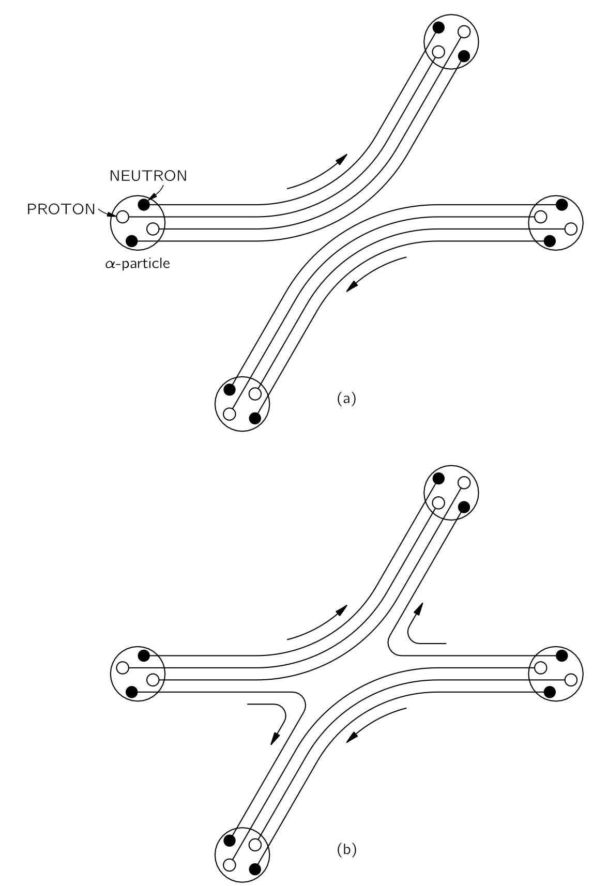
두 개 이상의 입자가 서로 단단히 결합되어 있을 때에는 흥미로운 문제가 발생한다. 예를 들어, \(\alpha\)-입자는 두개의 중성자와 두개의 양성자,즉 총 네 개의 입자를 포함한다. 두 개의 \(\alpha\)-입자가 산란될 때, 여러 가지 가능성이 있다. 산란 과정에서 하나의 \(\alpha\)-입자에서 중성자가 다른 \(\alpha\)-입자로 점프하는 일정한 진폭이 존재하고, 동시에 다른 \(\alpha\)-입자에서 나온 중성자가 반대 방향으로 튀어 산란에서 나오는, 즉 중성자 한 쌍이 교환되어 나오는 경우가 존재할 수 있다. 이 때 두 \(\alpha\)-입자는 원래의 각각과 다르다. 그림 11.11 을 보라. 중성자 한 쌍의 교환에 의한 산란 진폭은 그러한 교환이 없는 산란의 진폭에 간섭하게 되며, 한 쌍의 페르미 입자 교환이 있었기 때문에 간섭은 마이너스 기호에 의해 발생해야 한다. 반면에, 두 \(\alpha\)-입자의 상대 에너지가 너무 낮아 쿨롱 반발로 인해 비교적 멀리 떨어져 있을 정도이며 내부 입자를 교환할 가능성이 전혀 없을 경우, 우리는 \(\alpha\)-입자를 단순한 객체로 간주할 수 있으며 내부의 세부 사항에 대해 걱정할 필요가 없다. 그러한 상황에서는 산란 진폭에 대한 기여가 두 개뿐입니다. 교환이 없거나, 산란에서 네 개의 핵자 모두가 교환되거나. \(\alpha\)-입자 내의 양성자와 중성자는 모두 페르미 입자이므로, 어떤 쌍이든 교환하면 산란 진폭의 부호가 뒤바뀐다. \(\alpha\)-입자에 내부 변화가 없는 한, 두 \(\alpha\)-입자를 교환하는 것은 네 쌍의 페르미 입자를 교환하는 것과 동일하다다. 각 쌍마다 부호가 변하므로, 그 결과는 진폭이 양의 부호와 결합한다는 것이다. \(\alpha\)-입자는 보스 입자처럼 행동한다.
규칙은 다음과 같다.: 복합적 객체가 단일 객체로 간주될 수 있는 상황에서는, 페르미 입자 또는 보스 입자처럼 행동하며, 이는 물체를 이루는 페르미 입자가 홀수인지 짝수인지에 따라 달라진다.
우리가 언급한 모든 기본 페르미 입자—예를 들어 전자, 양성자, 중성자 등—는 스핀 \(j=1/2\) 를 가지고 있다. 여러 개의 페르미 입자를 결합하여 복합 객체를 형성하면, 그 결과의 스핀은 정수일 수도 있고 반정수일 수도 있다. 예를 들어, 두 개의 중성자와 두 개의 양성자로 이루어진 헬륨의 동위 원소인 He4는 스핀이 \(0\) 인 반면, 세 개의 양성자와 네 개의 중성자를 가진 Li7은 스핀이 \(3/2\) 이다. 우리는 나중에 각운동량을 합성하는 규칙을 배우게 될 것이며, 이제 반정수 스핀을 가진 모든 복합 객체는 페르미 입자를 모방하고, 정수 스핀을 가진 모든 합성 물체는 보스 입자를 모방한다는 점을 말하겠다.
이것은 흥미로운 질문을 제기한다: 왜 반정수 스핀을 가진 입자는 진폭이 마이너스 부호로 더해지는 페르미 입자이고, 정수 스핀을 가진 입자는 진폭이 양의 부호로 더해지는 보스 입자인가? 파울리는 양자장 이론과 상대성 이론의 복잡한 논증으로부터 설명을 이끌어 냈다. 하지만 아직 그의 주장을 기본적인 수준에서 표현할 방법을 찾지 못했다. 물리학에서 매우 간단하게 제시할 수 있는 규칙이 존재하는 몇 안 되는 곳 중 하나인 것처럼 보이지만, 그 규칙에 대해 아무도 간단하고 쉬운 설명을 찾지 못했다. 그 설명은 상대론적 양자역학의 심층에 존재한다. 이는 아마도 우리가 관련된 근본 원리를 완전히 이해하지 못하고 있음을 의미하며 당분간은 세상의 규칙 중 하나로 받아들여야 한다.
III.4–2 두 보즈 입자의 상태
여기서 보즈 입자에 대한 덧셈 규칙의 흥미로운 결과에 대해 알아본다. 두 개의 보스 입자가 두 개의 다른 산란체와 각각 산란되는 상황을 생각하자(그림 11.12). 세부적인 산란 메커니즘은 고려하지 않는다. 입자 \(a\) 는 상태 \(1\) 로 산란되며 입자 \(b\) 는 상태 \(2\) 로 산란된다. 우리는 두 상태 \(1\) 과 \(2\) 가 거의 동일하다고 가정한다. (우리가 궁극적으로 진정으로 알아내고 싶은 것은 두 입자가 동일한 방향이나 상태로 산란되는 진폭이다. 그러나 상태가 거의 동일할 경우 어떤 일이 일어나는지 먼저 생각하고, 그 상태가 동일해졌을 때 어떤 일이 일어나는지 알아내는 것이 가장 좋다.)
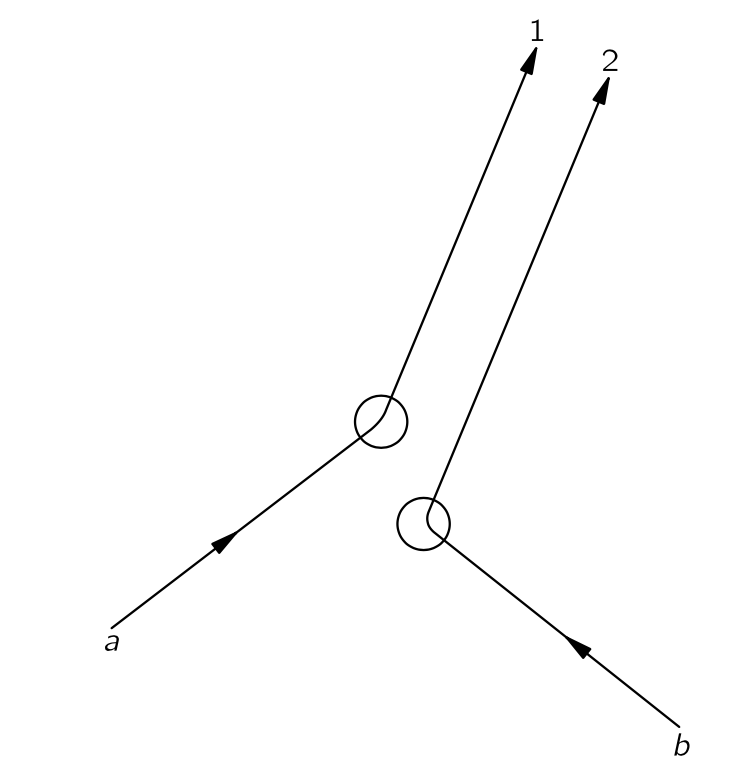
입자 \(a\) 만 있을 때의 방향 \(1\) 에 대한 산란 진폭은 \(\langle 1 | a\rangle\) 로 표현 할 수 있다. \(b\) 도 마찬가지로 단독으로 있을 때의 산란진폭은 \(\langle 2|b\rangle\) 이다. 두 입자가 동일하지 않다면, 두 산란이 동시에 발생하는 진폭은 단지 \(\langle 1|a\rangle \langle 2 |b\rangle\) 이며 확률은 \(|\langle 1|a\rangle \langle 2 |b\rangle|^2\) 이다. \(a_1=\langle 1 | a\rangle\), \(b_2=\langle 2|b\rangle\) 라고 하면 이중 산란의 확률은 \(|a_1|^2|b_2|^2\) 이다. 입자 \(b\) 가 방향 \(1\) 로, 입자 \(a\) 가 방향 \(2\) 로 산란되는 경우의 진폭은 \(\langle 2|a\rangle \langle 1|b\rangle\) 이며 확률은 \(|\langle 2|a\rangle \langle 1|b\rangle|^2=|a_2|^2 |b_1|^2\) 이다.
이제 두 개의 산란된 입자를 측정하는 작은 계수기 두 개가 있다고 하자. 계수기가 두 입자를 함께 측정할 확률 \(P_2\) 는 단지 합일 뿐이다.
\[ P_2 = |a_1|^2 |b_2|^2 + |a_2|^2 |b_1|^2. \tag{11.19}\]
이제 방향 \(1\) 과 \(2\) 가 매우 가깝다고 가정하자. 우리는 \(a\) 가 방향에 따라 부드럽게 변할 것으로 기대하므로, \(a_1\) 과 \(a_2\) 는 \(1\) 과 \(2\) 가 가까워질 수록 서로 비슷해야 하며 충분히 가깝다면, \(a_1=a_2 =a\) 이어야 한다. 마찬가지로 \(b_1=b_2=b\). 그렇다면
\[ P_2 = 2|a|^2|b|^2. \tag{11.20}\]
이제 \(a\) 와 \(b\) 가 동일한 보스 입자라고 가정해 보자. 그렇다면 \(a\) 가 \(1\) 로, \(b\) 가 \(2\) 로 가는 과정은 \(a\) 가 \(2\) 로, \(b\) 가 \(1\) 로 가는 교환 과정과 구별할 수 없으며 이 경우 두 서로 다른 과정의 진폭이 간섭할 수 있다. 따라서 두 계수기 각각에서 입자를 얻기 위한 총 진폭은
\[ \langle 1|a \rangle \langle 2|b\rangle + \langle 2|a \rangle \langle 1|b\rangle \tag{11.21}\]
이며 그 확률은
\[ P_2=|a_1 b_2 + a_2 b_1|^2 = 4|a|^2|b|^2 \tag{11.22}\]
이다. 즉 두 개의 동일한 보스 입자가 같은 상태로 산란될 경우를 찾을 확률이 서로 다르다고 가정했을 때 계산했을 때의 두 배이다.
위에서 두 입자가 별개의 계수기에서 관측된다고 했지만, 이는 필수적이지 않다. 두 방향 \(1\) 과 \(2\) 가 어느 정도 떨어진 작은 카운터로 향한다고 하자. 우리는 방향 \(1\) 이 계수기의 면적 요소 \(dS_1\) 을 향하고, 방향 \(2\) 가 \(dS_2\) 를 향한다고 하자. (우리는 계수기 표면이 이 방향에 직각이라고 가정한다.) 입자가 정확한 방향이나 특정 지점으로 이동할 확률은 \(0\) 이며 계수기의 단위 면적당 도달 확률을 제시하도록 진폭을 정의해야 한다. 입자 \(a\) 만 있다고 가정하면, 방향 \(1\) 에 대한 산란에 일정한 진폭을 갖게 된다. \(\langle 1|a\rangle = a_1\) 을 방향 \(1\) 에 따라 계수기의 단위 면적에 \(a\) 가 산란하는 진폭으로 정의한다. 다시 말해, \(a_1\) 의 스케일이 선택된다—우리는 이를 “정규화 (normalization)” 이라고 부르며 면적 요소 \(dS_1\) 로의 산란 확률은
\[ |\langle 1|a \rangle|^22\,dS_1=|a_1|^2\,dS_1. \tag{11.23}\]
우리 계수기의 표면을 \(\Delta S\) 라고 하면 입자 \(a\) 가 계수기 안으로 산란될 전체 확률은
\[ \int_{\Delta S} |a_1|^2\,dS_1. \tag{11.24}\]
자주 그랬듯이 우리는 계수기가 충분히 작아 진폭 \(a_1\) 이 \(\Delta S\) 전체에서 거의 동일하다고 가정한다. 그리고 \(a_1=a\) 라고 하면 입자 \(a\) 가 계수기의 어느 곳에 산란될 확률
\[ p_a=|a|^2\Delta S. \tag{11.25}\]
같은 방식으로, 입자 \(b\) 만 있을 때, 면적 성분 \(dS_2\) 로 산란될 확률은 \(|b_2^2\,dS_2\) 임을 안다. 역시 \(b_2\) 가 \(dS_2\) 전체 영역에서 거의 일정하며하다면 입자 \(b\) 가 계수기의 어느 곳에 산란될 확률
\[ p_b=|b|^2 \Delta S. \tag{11.26}\]
이제 두 입자가 모두 존재할 때, \(a\) 가 \(dS_1\) 에 산란되고 \(b\) 가 \(dS_2\) 에 산란될 확률은
\[ |a_1b_2|^2 \,dS_1dS_2=|a|^2|b|^2\,dS_1dS_2. \tag{11.27}\]
\(a\) 와 \(b\) 가 모두 계수기에 들어갈 확률은 \(dS_1\) 과 \(dS_2\) 를 \(\Delta S\) 에 대해 적분하여 구한다.
\[ P_2=|a|^2|b|^2(\Delta S)^2. \tag{11.28}\]
우연히 우리는 이것이 \(p_a\cdot p_b\) 와 동일하다는 것을 알게 되며, 이는 입자 \(a\) 와 \(b\) 가 서로 독립적으로 작용한다고 가정할 때와 같다.
그러나 두 입자가 동일할 경우, 입자 \(a\) 가 \(dS_2\) 로, 입자 \(b\) 가 \(dS_1\) 으로 들어가는 경우와 \(a\) 가 \(dS_1\) 으로, \(b\) 가 \(dS_2\) 로 들어가는 것을 구분할 수 없으며, 따라서 이러한 과정의 진폭이 간섭하게 된다. (두 개의 서로 다른 입자의 경우에는, 실제로는 어느 입자가 카운터에서 어디로 가는지는 신경 쓰지 않았지만, 원칙적으로는 알 수 있을 것이며, 따라서 간섭이 없다. 동일한 입자에 대해서는 원칙적으로도 판단할 수 없다.) 그렇다면 두 입자가 \(dS_1\) 과 \(dS_2\) 에 도달할 확률은
\[ |a_1b_2 + a_2 b_1|^2 \,dS_1 dS_2. \tag{11.29}\]
하지만 이제 계수기 영역을 통합할 때는 조심해야 한다. \(dS_1\) 과 \(dS_2\) 를 \(\Delta S\) 에 걸쳐 두면, 식 11.29 은 모든 표면 요소 \(dS_1\) 과 \(dS_2\) 쌍에서 발생할 수 있는 모든 것을 포함하고 있기 때문에 면적의 각 부분을 두 번 셈하게 되므로 결과를 \(2\) 로 나누어 이중 계산을 보정할 수 있다. 그렇다면 동일한 보스 입자에 대한 \(P_2\) 는 다음과 같다.
\[ P_2(\text{Bose})=\dfrac{1}{2} \left[4|a|^2|b|^2(\Delta S)^2\right] = 2|a|^2|b|^2(\Delta S)^2. \tag{11.30}\]
다시 말하지만, 이것은 우리가 구분 가능한 입자에 대해 식 11.28 에서 얻은 것의 정확히 두배이다.
만약 우리가 \(b\) 채널이 이미 그 입자를 특정 방향으로 보냈다는 것을 알고 있었다고 잠시 상상해 보면, 두 번째 입자가 같은 방향으로 갈 확률이 독립적인 사건으로 계산했을 경우 예상했던 것보다 두 배라고 말할 수 있다. 보스 입자의 특성에 따르면, 이미 어떤 조건에서 하나의 입자가 존재한다면, 같은 조건에 있는 두 번째 입자를 얻는 확률이 첫 번째 입자가 아직 존재하지 않을 경우보다 두 배 더 높다. 이 사실은 종종 다음과 같이 진술됩니다: 주어진 상태에 이미 하나의 보스 입자가 존재한다면, 동일한 입자를 그 위에 놓는 진폭이 존재하지 않을 때보다 \(\sqrt{2}\) 를 곱한것만큼 더 크다.